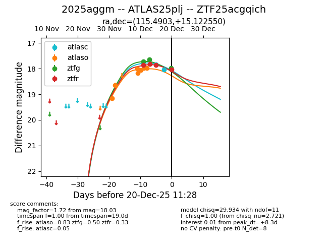
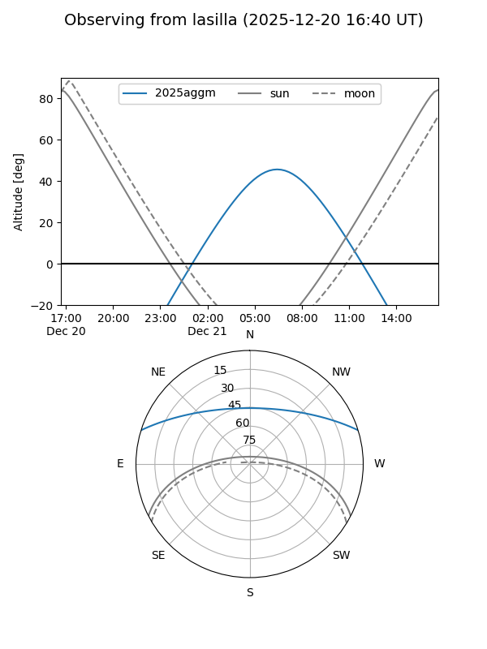
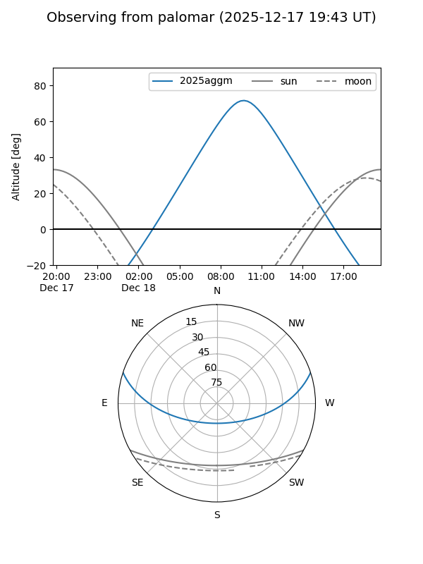
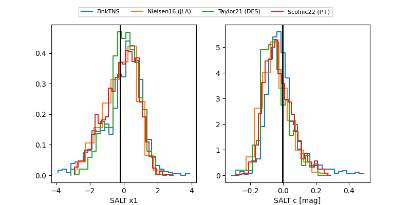

2025aggm
Target 2025aggm at 2025-12-20 11:30
Aliases and brokers:
FINK: fink-portal.org/ZTF25acgqich
Lasair: lasair-ztf.lsst.ac.uk/objects/ZTF25acgqich
ALeRCE: alerce.online/object/ZTF25acgqich
TNS: wis-tns.org/object/2025aggm
YSE: ziggy.ucolick.org/yse/transient_detail/2025aggm
alt names
ZTF25acgqich (ztf,fink_ztf)
2025aggm (tns,yse)
ATLAS25plj (atlas)
Coordinates:
equatorial (ra, dec) = 115.4903,+15.12255
equatorial (HMS+DMS) = 07:41:57.67,+15:07:21.18
galactic (l, b) = (204.7210,+17.86838)
Flags:
Photometry:
last atlasc=18.03, atlaso=17.98, ztfg=17.98, ztfr=18.03
2 atlasc, 7 atlaso, 3 ztfg, 4 ztfr detections
Lightcurve

Visibility


Additional plots
